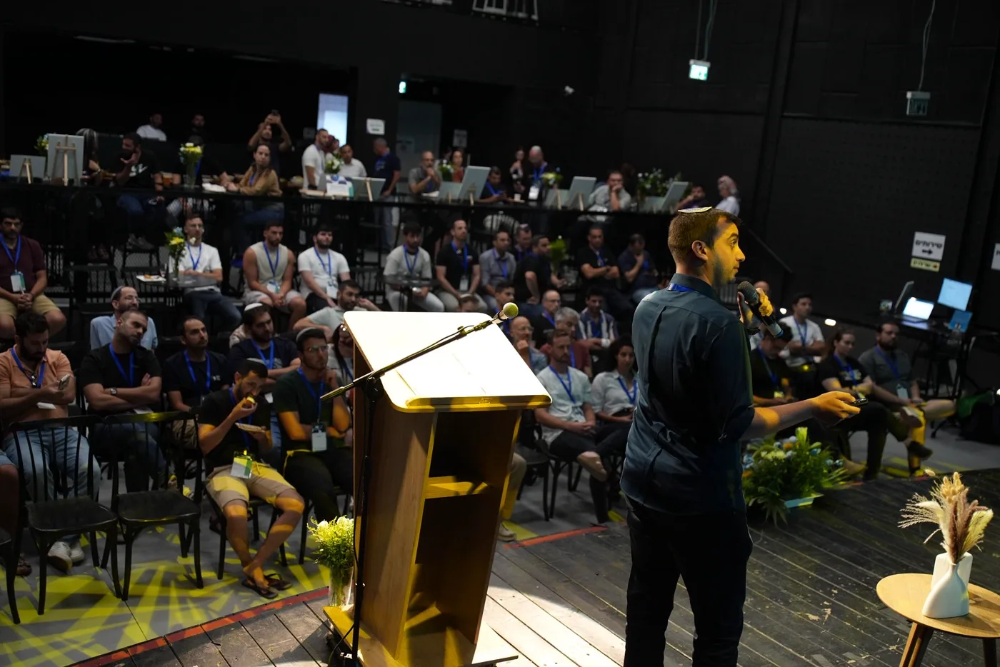

הרצאה בארגון
שעה או שעתיים מול צוות, על מה שבינה מלאכותית באמת משנה בעבודה שלו ולא בכותרות. בלי מצגת על העתיד.
לפעמים בקוד, ולפעמים במצלמה שכבר תלויה אצלכם.


בינה מלאכותית לבדה היא כבר צפויה. מה שמעניין מתחיל כשמחברים אותה למכונה, לחיישן, למדף, ומקבלים בחזרה מספר אמיתי.
אנחנו לוכדים את המציאות, הופכים אותה למערכת, ומגישים אותה לבני אדם. לכל מחלקה יש אתר משלה.
 ראייה ממוחשבת
ראייה ממוחשבת
המצלמות שכבר תלויות אצלכם מזהות מדף ריק, אדם שנפל או גזם שנזרק, וההתרעה מגיעה לנייד.
← לאתר המחלקה
לידאר
סריקה אחת מהטלפון מחזירה מדידה הנדסית: עומק, מדרגות, נפח בור, שיפוע ומודל מוכן להדפסה.
← לאתר המחלקה AI
AI
מתחילים באיפיון עסקי, לא בקוד. סוכנים, אוטומציות, אתרים ומערכות.
← לאתר המחלקה וידאו
וידאו
סרטים לאירועי חיים ולפרסום: בר ובת מצווה, חתונה, וסיפור חיים מתוך תמונות ישנות. מהפריים הראשון עד המיקס האחרון.
← לאתר המחלקה
פדגוגיה
האקתונים, סדנאות עומק ותוכניות לבתי ספר. ילדים בונים טכנולוגיה בידיים.
← לאתר המחלקה
AR
סופרמרקט וירטואלי שמסתובבים בתוכו, עם קטלוג אמיתי, ופלנוגרמה לרשתות.
← לאתר המחלקהמזמינים אותנו ללמד כמעט באותה תדירות שמזמינים אותנו לבנות. אותו חומר, רק שבמקום מאגר קוד יש חדר.

שעה או שעתיים מול צוות, על מה שבינה מלאכותית באמת משנה בעבודה שלו ולא בכותרות. בלי מצגת על העתיד.
יום שבו צוות בונה משהו משלו ויוצא איתו עובד. אנחנו נשארים על הכלים, לא על התיאוריה.
פורמט שאנחנו מריצים לבתי ספר ולחברות. בסוף יש דבר שעובד, ומישהו שלא ידע שהוא מסוגל לבנות אותו.
אלקטרוניקה, חיישנים ומודלים חכמים, עם פלטפורמות שכתבנו לכיתה. זו המחלקה ע"ש יצחק אוחיון.
לימדנו במכללת ספיר, בבתי ספר ובארגונים. אריאל מנהל את קהילת קלוד ישראל מאז היום שקלוד יצא.
אותן מחלקות, בתוך אולם שאפשר להסתובב בו.

אחראי הפיתוח הראשי בקורוויז, מרצה ומוביל סדנאות. פתח את קהילת קלוד ישראל ביום שקלוד יצא כצ'אטבוט, ומנהל אותה מאז.

דוקטור להנדסת חשמל ומחשבים, שש שנים בפיתוח AI לרכב אוטונומי. בזכותו ה-AI כאן נוגע בחיישנים, ברדאר ובלידאר במקום להישאר בחלון צ'אט.
סרן במילואים, הבנה עמוקה בעולמות המוצר, ועשרות עסקים בקמעונאות שליווה. עוד עליו בקרוב.
ספרו לנו מה אתם מנסים לעשות. אם זה לא בשבילנו, נגיד לכם.